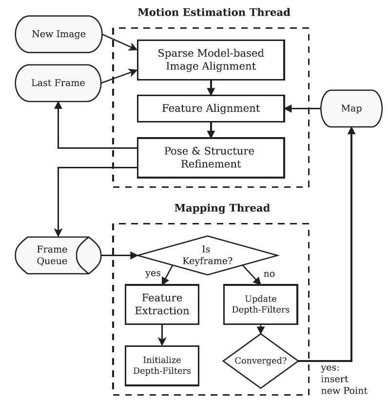

SVO（Semi-direct Visual Odometry）[1]顾名思义是一套视觉里程计（VO）算法。相比于ORB-SLAM，它省去了回环检测和重定位的功能，不追求建立、维护一个全局地图，更看重tracking的效果，追求高计算速度、低CPU占用率，所以SVO非常适合在计算资源有限的移动设备上使用。SVO对PTAM的改进主要在两个方面：1）高效的特征匹配；2）鲁棒的深度滤波器。SVO比PTAM、ORB-SLAM计算速度快很多的最主要原因是SVO不需要每一帧都提取特征点。在tracking线程，当前帧的特征点是从上一帧用光流法传递到过来的，只有在mapping线程插入新关键帧时才需要提取特征点。另一个原因是SVO使用了深度滤波器，PTAM和ORB-SLAM只用两帧图像三角化出地图点，只要地图点没有被判定为外点，就固定不变了（除非BA阶段调整），而SVO的深度滤波器会根据多帧图片不断收敛地图点的不确定度，从而得到更可靠的地图点。因为地图点更可靠，所以SVO只需要维护更少的地图点（PTAM一般维护约160到220个特征点，SVO在fast模式下维护约120个地图点），从而加快了计算速度。 
在tracking线程，SVO综合了直接法和特征点法的优点设计了全新的三步策略。第一步（Sparse Model-based Image Alignment），用Lucas-Kanade光流法粗算当前帧的位置姿态。具体方法是：把前一帧对应的地图点投影到当前帧（初始位置姿态为单位阵），比较前一帧特征点和当前帧投影点附近区域（patch）像素灰度值的差别，通过最小化photometric error求解当前帧的位置姿态。由于这一步是粗算，为了加快计算速度，patch选取了4*4的大小，并且没有做仿射变换（affine warp）。为了加速，从金字塔的最顶层（默认是第五层）逐层计算（默认计算到第3层）。第二步（Feature Alignment），求出特征点在当前帧的精确像素坐标。对于每个特征点单独考虑，找到和当前帧视角最接近的共视关键帧（这个关键帧和当前帧的视角差别越小，patch的形变越小，越可以更精准地匹配），然后再次用Lucas-Kanade光流法最小化photometric error。相比于第一步的粗测，这一步选取了8*8的patch，并且做仿射变换，可以得到亚像素级别的精度。第三步（Pose & Structure Refinement），通过前两步找到精确的匹配点之后，可以通过最小化重投影误差进一步优化相机姿态以及地图点位置（这一步就和patch无关了，地图点和投影点都是点，cost function是点到点的距离），这一步又分成三小步：1）Motion-only BA，地图点不变，只优化当前帧位置姿态。2）Strcture-only BA，当前帧不动，只优化地图点位置。3）Local BA，附近关键帧和可见的地图点都被优化了，这一小步在fast模式下是不做的。
SVO之所以叫半直接法（Semi-direct）就是因为前两步估计策略像直接法（LSD-SLAM、DSO为代表）一样最小化photometric error，而第三步则和特征点法（PTAM、ORB-SLAM为代表）一样最小化重投影误差。如果省略第一步，直接从第二步开始计算会更耗时，因为为了匹配远距离的特征点需要把patch设置得很大，而且会需要剔除外点。而如果省略第二步和第三步则会产生严重的累积漂移，因为第一步只是考虑前后帧，而第三步把当前帧和关键帧、地图点对齐了。
在mapping线程，SVO首先判定当前帧是否是关键帧（追踪成功的特征点数量是否少于一个阈值就插入新关键帧），如果是，则提取特征点、初始化深度滤波器；如果不是，则更新深度滤波器看它是否收敛，如果收敛，则生成新的地图点辅助tracking线程计算。SVO提取特征点的方式和ORB-SLAM类似，也是先构造金字塔，再划分网格提取最显著的FAST特征（如果提取不到足够显著的FAST角点，SVO2.0[2]会找梯度值最大的像素作为edgelet特征点，它和普通FAST角点在计算中的唯一差别是：在tracking线程的第二步feature alignment阶段，edgelet只沿梯度方向优化）。每个特征点有一个单独的深度滤波器，深度值被设定为高斯分布与均匀分布的加权和（作者论证了这种假设比单一高斯分布要好，更详细的解读可以参考REMODE），高斯分布描述内点的分布，均匀分布描述外点的分布。深度值滤波器在初始化时，不确定度是很大的（如果是stereo或者RGBD相机可以直接给出接近真值的初值，深度滤波器会收敛的更快），之后每计算出新一帧的位置姿态，都可以根据几何约束沿着极线找特征点匹配，然后根据三角测量的原理得到不确定度更小的后验深度值。当不确定度小于一个阈值，这个地图点就会被建立。地图点立即就会被用来估计运动。
参考文献：
[1] Forster C, Pizzoli M, Scaramuzza D. SVO: Fast semi-direct monocular visual odometry[C]// IEEE International Conference on Robotics and Automation. IEEE, 2014:15-22.
[2] Forster C, Zhang Z, Gassner M, et al. SVO: Semidirect Visual Odometry for Monocular and Multicamera Systems[J]. IEEE Transactions on Robotics, 2017, 33(2):249-265.